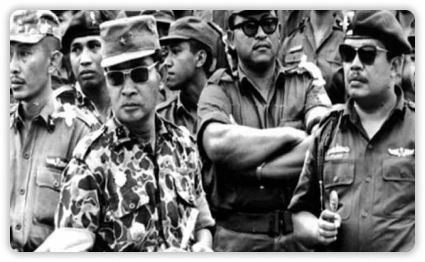
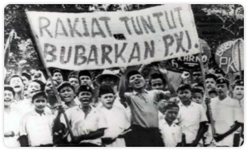
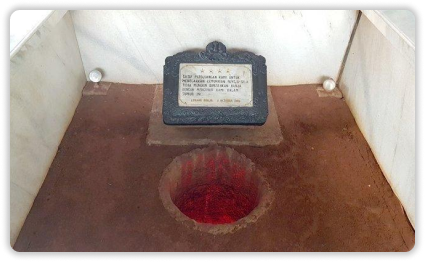
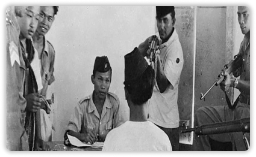

Information
G30S PKI: Sejarah, Tujuan, Kronologi Dan Latar Belakang

G30S PKI atau gerakan 30 September yang dilancarkan oleh Partai Komunis Indonesia (PKI) menjadi salah satu sejarah pahit bagi pemerintah Indonesia pada waktu itu, 56 tahun silam. PKI merupakan salah satu partai tertua dan terbesar di Indonesia.Partai ini mengakomodir kalangan intelektual, buruh, hingga petani. Pada pemilu tahun 1955, PKI berhasil meraih 16,4 persen suara dan menempati posisi keempat di bawah PNI, Masyumi, dan NU. Sejarah berdirinya PKI tak lepas dari Indische Sociaal Democratische Vereeniging (ISDV), partai kecil berhaluan kiri yang didirikan oleh tokoh Sosialis Belanda, Hendricus Josephus Franciscus Marie Sneevliet atau dikenal dengan Henk Sneevliet.
SEJARAH PKI

Peristiwa G30S PKI terjadi pada tahun 1965 dan dimotori oleh Dipa Nusantara Aidit atau DN Aidit,
pemimpin terakhir PKI. Di bawah kendali DN Aidit, perkembangan PKI semakin nyata walaupun
diperoleh melalui sistem parlementer.
Dikutip dari buku Api Sejarah 2 oleh Ahmad Mansur Suryanegara, menurut Arnold C. Brackman,
DN Aidit mendukung konsep Khrushchev, yakni "If everything depends on the communist, we
would follow the peaceful way (bila segalanya bergantung pada komunis, kita harus
mengikuti dengan cara perdamaian)".
Pandangan itu disebut bertentangan dengan konsep Mao Ze Dong dan Stalin yang secara terbuka
menyatakan bahwa komunisme dikembangkan hanya dengan melalui perang.
G30S PKI terjadi pada malam hingga dini hari, tepat pada akhir tanggal 30 September dan masuk
1 Oktober 1965.
SEJARAH TUJUAN PKI

Tujuan utama G30S PKI adalah menggulingkan pemerintahan era Soekarno dan mengganti
negara Indonesia menjadi negara komunis. Seperti diketahui, PKI disebut memiliki lebih dari 3 juta
anggota dan membuatnya menjadi partai komunis terbesar ketiga di dunia, setelah RRC dan Uni
Soviet.
Selain itu, dikutip dari buku Sejarah untuk SMK Kelas IX oleh Prawoto, beberapa tujuan G30S PKI
adalah sebagai berikut:
1. Menghancurkan Negara Kesatuan Republik Indonesia (NKRI) dan menjadikannya sebagai
negara komunis.
2. Menyingkirkan TNI Angkatan Darat dan merebut kekuasaan pemerintahan.
3. Mewujudkan cita-cita PKI, yakni menjadikan ideologi komunis dalam membentuk sistem
pemerintahan yang digunakan sebagai alat untuk mewujudkan masyarakat komunis.
4. Mengganti ideologi Pancasila menjadi ideologi komunis.
5. Kudeta yang dilakukan kepada Presiden Soekarno tak lepas dari rangkaian kegiatan
komunisme internasional.
SEJARAH KRONOLOGI PKI

Tindakan dan penyebarluasan ideologi komunis yang dilakukan oleh PKI menimbulkan kecurigaan
dari kelompok anti-komunis. Tindakan tersebut juga mempertinggi persaingan antara elit politik
nasional.
Kecurigaan semakin mencuat dan memunculkan desas-desus di masyarakat, terlebih menyangkut
kesehatan Presiden Soekarno dan Dewan Jenderal Angkatan Darat. Di tengah kecurigaan
tersebut, Letnan Kolonel Untung, Komandan Batalyon I Kawal Resimen Cakrabirawa, yakni
pasukan khusus pengawal Presiden, memimpin sekelompok pasukan dalam melakukan aksi
bersenjata di Jakarta.
Pasukan tersebut bergerak meninggalkan daerah Lubang Buaya. Peristiwa ini terjadi pada tengah
malam, pergantian hari Kamis, 30 September 1956 menuju hari Jumat, 1 Oktober 1965. Kudeta yang
sebelumnya dinamakan Operasi Takari diubah menjadi gerakan 30 September. Mereka menculik dan
membunuh para perwira tinggi Angkatan Darat. Aksi tentara tersebut pada tanggal 30 September
berhasil menculik enam orang perwira tinggi Angkatan Darat.
SEJARAH LATAR BELAKANG PKI

Secara umum, G30S PKI dilatarbelakangi oleh dominasi ideologi Nasionalisme, Agama, dan Komunisme
(NASAKOM) yang berlangsung sejak era Demokrasi Terpimpin diterapkan, yakni tahun 1959-1965
di bawah kekuasaan Presiden Soekarno.
Beberapa hal lain yang menyebabkan mencuatkan gerakan yang menewaskan para Jenderal ini adalah
ketidakharmonisan hubungan anggota TNI dan juga PKI. Pertentangan pun muncul di antara keduanya.
Selain itu, desas desus kesehatan Presiden Soekarno juga turut melatarbelakangi pemberontakan
G30S PKI.Itulah sejarah G30S PKI. Setelah gerakan tersebut berhasil ditumpas, muncul berbagai
aksi dari kalangan masyarakat untuk membubarkan PKI.